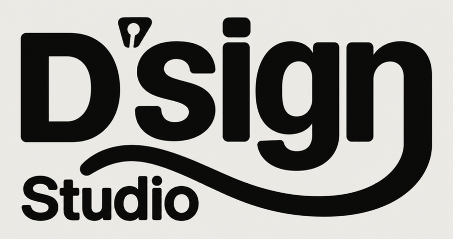
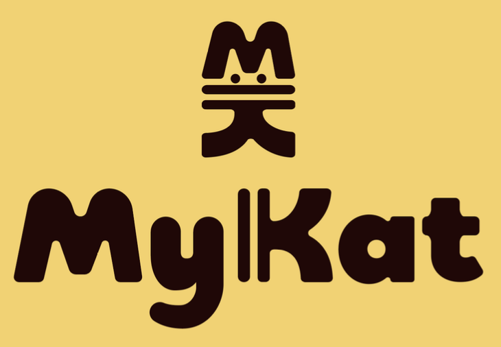
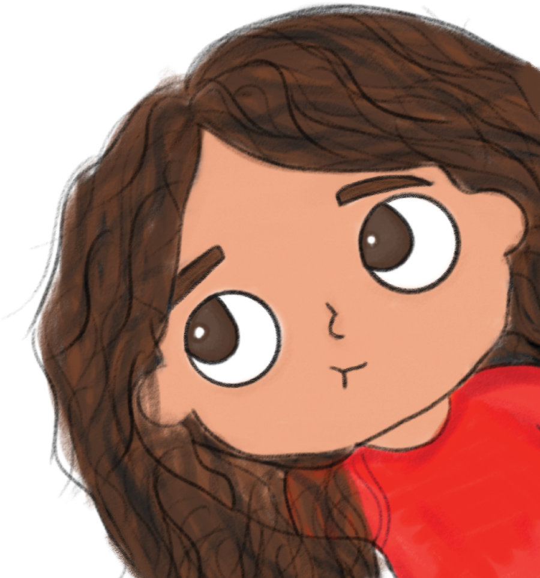
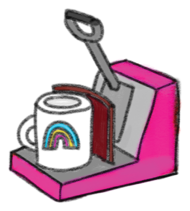
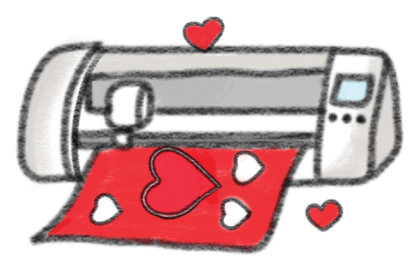
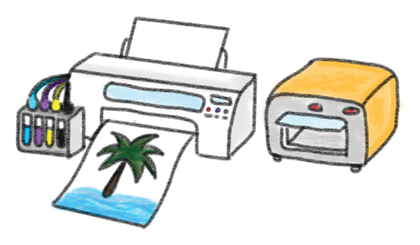
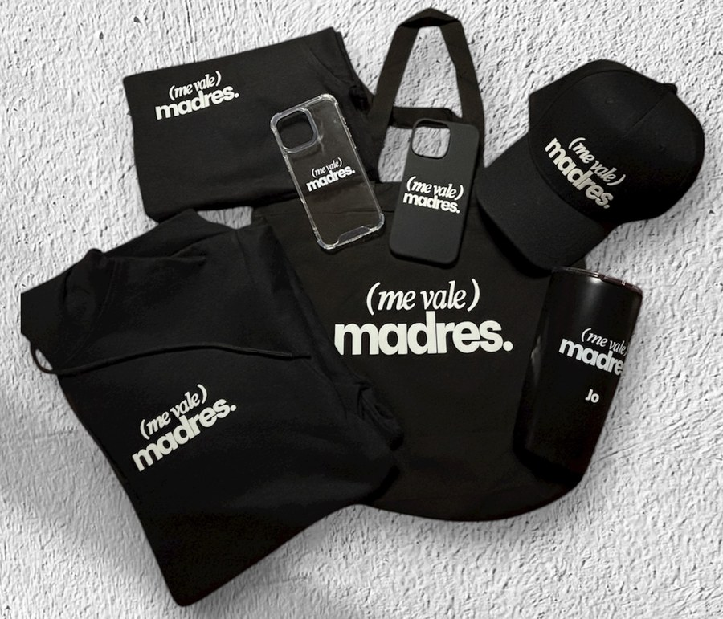
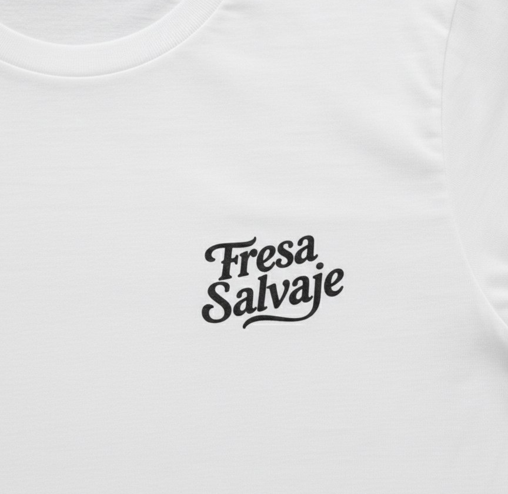
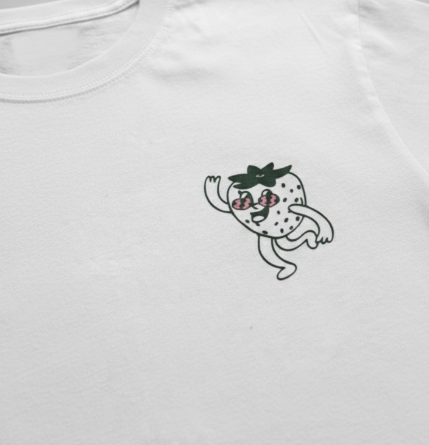
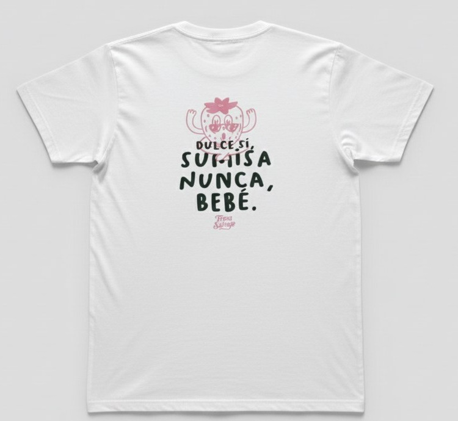

Logotipos
Diseño de logotipos simples y fáciles de recordar para marcas pequeñas.


Portafolio 2026
Me gusta convertir ideas en cosas que se pueden tocar: logotipos, tazas, playeras y todo lo que lleve un poquito de color.

Soy Daniela Márquez, estudiante de Diseño. Llevo 3 años trabajando en una empresa de personalización de productos, donde aprendí a pasar un diseño de la pantalla al producto final.
Mi estilo es minimalista y colorido: me gustan las formas simples, los colores que se notan y los detalles que hacen que algo se sienta único.
Me encanta ver cómo un diseño que empezó como un boceto termina en una taza o una playera de verdad.
Universidad · 2024 – Actualidad
3 años de trabajo con vinil, sublimación y DTF



Diseño de logotipos simples y fáciles de recordar para marcas pequeñas.


Proyectos de merchandising para marcas como Fresa Salvaje y Señorita Caruso, ambas de grupo OCHO.30, y para el podcast "Me vale madres".




¿Tienes una idea? Contáctame.